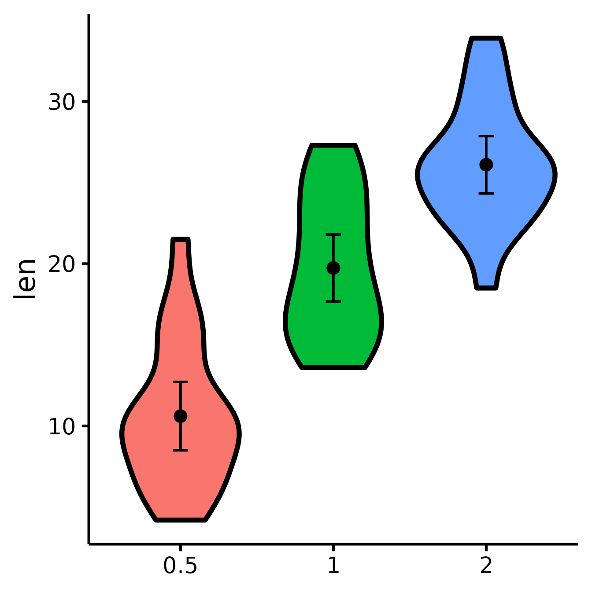
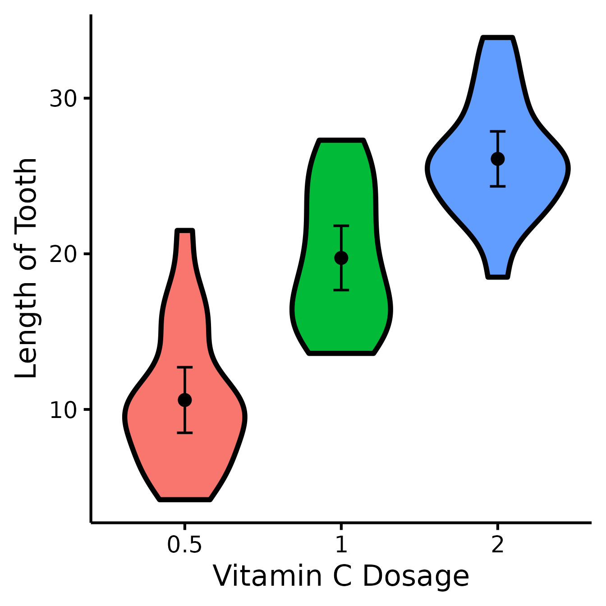
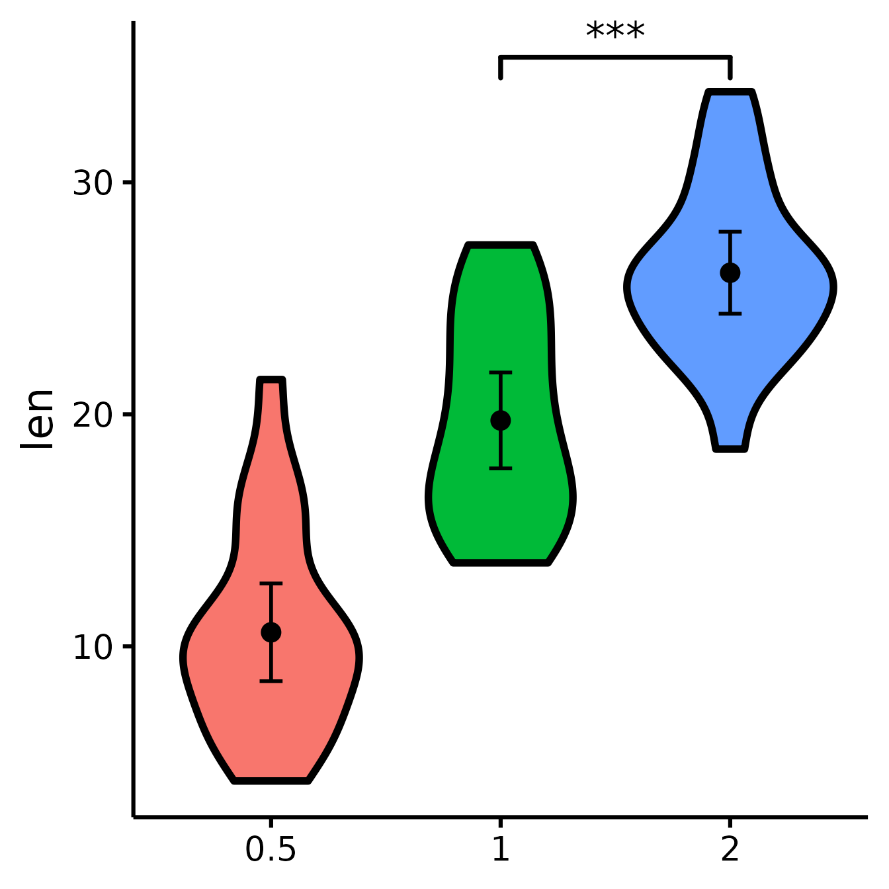
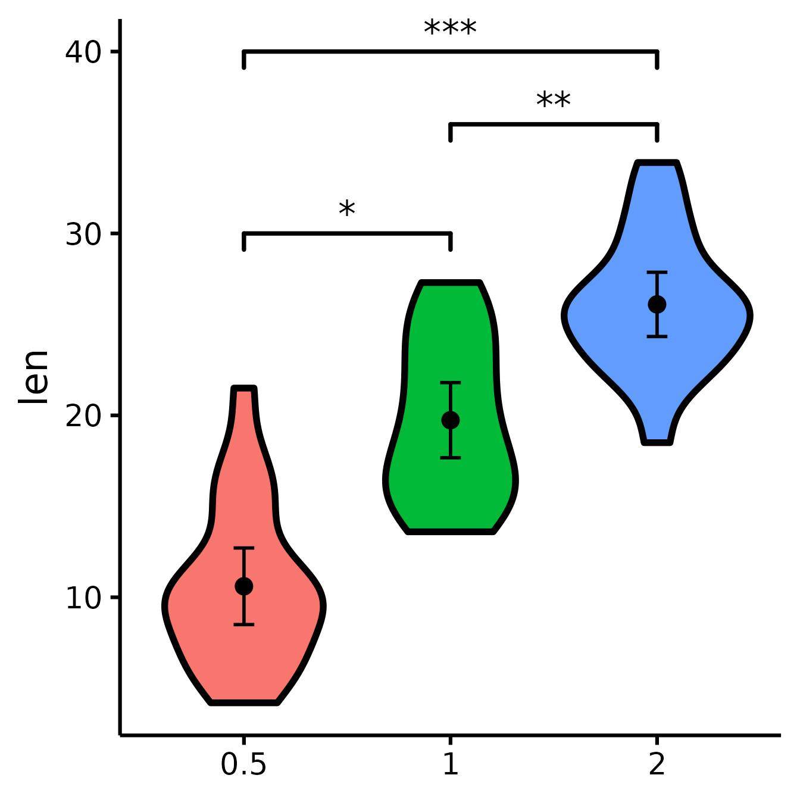
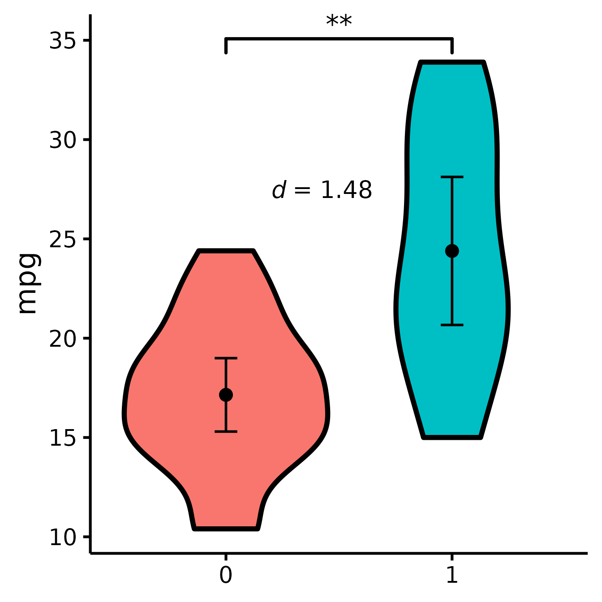
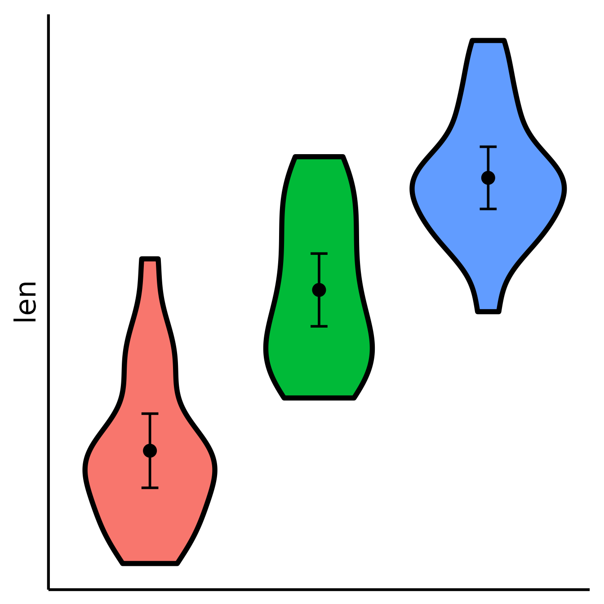
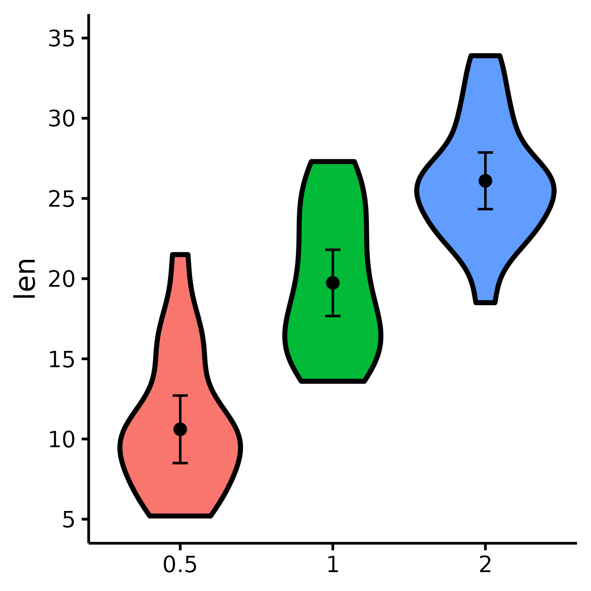
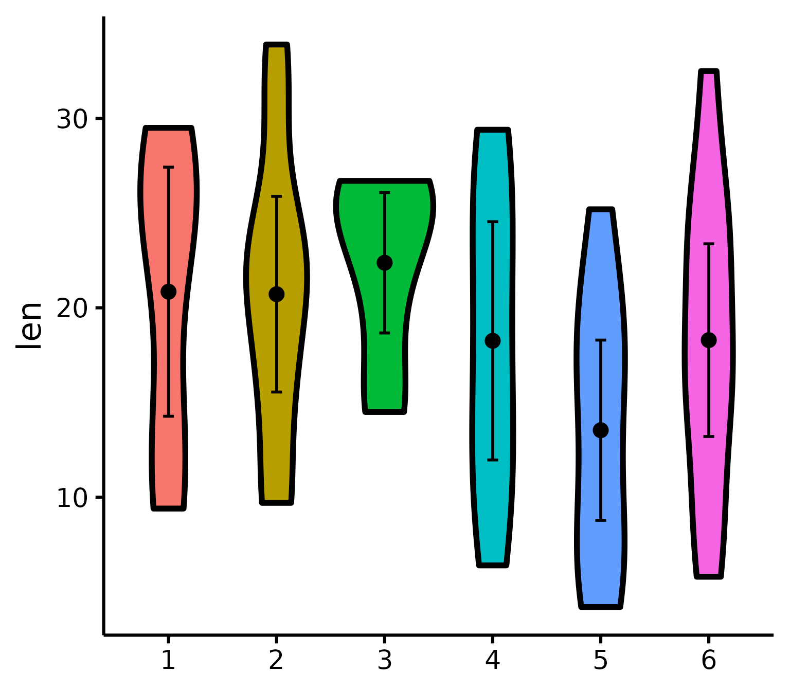
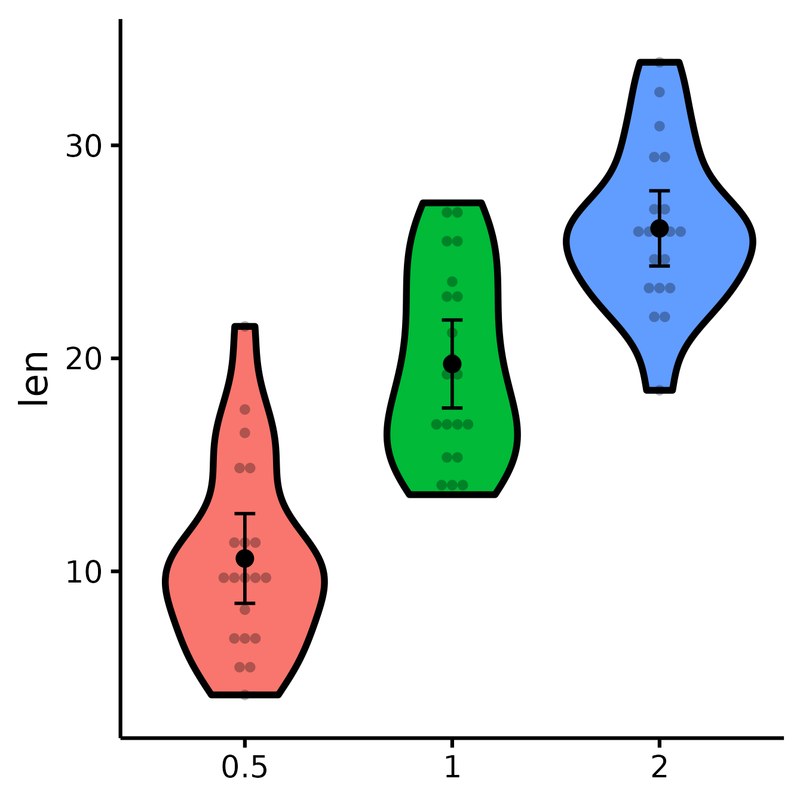
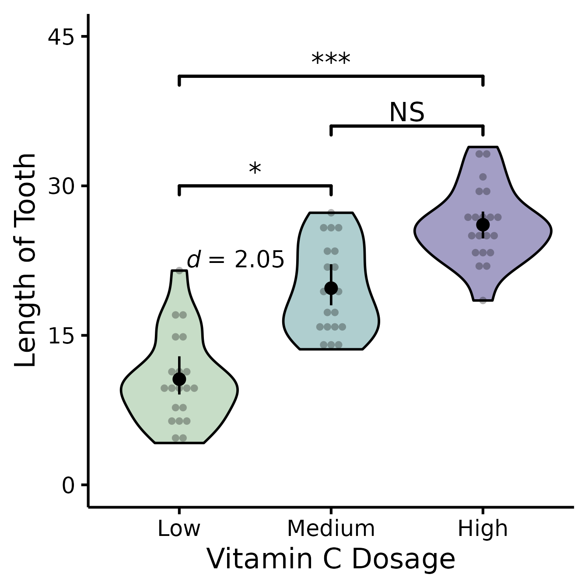

Publication-ready violin plots in R
Rémi Thériault
September 6, 2019
Source:vignettes/violin.Rmd
violin.RmdGetting started
I happened to have lots of plots to do with slight variations, so I made a function to make my life easier.
This function, in particular, serves to compare 2 or more experimental groups (although it will still plot with 1 group). We use violin plots instead of bar plots because they provide more information for the same space (precisely, the distribution density/frequency of responses, which allows you to visually estimate normality, skewness, and kurtosis).
Let’s first load the demo data. This data set comes with base
R (meaning you have it too and can directly type this
command into your R console).
## len supp dose
## 1 4.2 VC 0.5
## 2 11.5 VC 0.5
## 3 7.3 VC 0.5
## 4 5.8 VC 0.5
## 5 6.4 VC 0.5
## 6 10.0 VC 0.5Load the rempsyc package:
Note: If you haven’t installed this package yet, you will need to install it via the following command:
install.packages("rempsyc"). Furthermore, you may be asked to install the following packages if you haven’t installed them already (you may decide to install them all now to avoid interrupting your workflow if you wish to follow this tutorial from beginning to end):
pkgs <- c("ggplot2", "boot", "psych")
install_if_not_installed(pkgs)
nice_violin(
data = ToothGrowth,
group = "dose",
response = "len"
)
Dots = means
Error bars = 95% confidence intervals
Width = distribution density (frequency)Save a high-resolution image file to specified directory
ggplot2::ggsave("nice_violinplothere.pdf",
width = 7, height = 7,
unit = "in", dpi = 300
)
# Change the path to where you would like to save it.
# If you copy-paste your path name,
# remember to use "R" slashes ('/' rather than '\').
# Also remember to specify the .tiff extension of the file.Pro tip: Recommended dimensions for saving is 7 inches wide and 7 inches high. The
.epsformats are recommended for scalable vector graphics for high-resolution submissions to scientific journals. However, you can also save in other formats, such as.tiff,.png, or.jpg.
Customization
Change x- and y- axes labels
nice_violin(
data = ToothGrowth,
group = "dose",
response = "len",
ytitle = "Length of Tooth",
xtitle = "Vitamin C Dosage"
)
See difference between two groups
To see if two groups are statistically significantly different.
nice_violin(
data = ToothGrowth,
group = "dose",
response = "len",
comp1 = "0.5",
comp2 = "2"
)See difference between two other groups
You can also select groups based on their position on the x-axis (notice no quotes this time).
nice_violin(
data = ToothGrowth,
group = "dose",
response = "len",
comp1 = 2,
comp2 = 3
)
Compare all three groups
What if you want to look at all three groups at the same time?
Unfortunately, the underlying package we use, ggsignif,
does not allow the comparison of more than one group at once. So we need
to tweak this manually instead. (Note that we can also use this
technique when the significance computed with ggsignif does
not correspond to the number of stars we want to use, for example if we
use a different p-value or not a t-test.)
nice_violin(
data = ToothGrowth,
group = "dose",
response = "len",
signif_annotation = c("*", "**", "***"), # manually enter the number of stars
signif_yposition = c(30, 36, 40), # What height (y) should the stars appear?
signif_xmin = c(1, 2, 1), # Where should the left-sided brackets start (x)?
signif_xmax = c(2, 3, 3)
) # Where should the right-sided brackets end (x)?
Include effect size (Cohen’s d)
nice_violin(
data = mtcars,
group = "am",
response = "mpg",
comp1 = 1,
comp2 = 2,
has.d = TRUE
)
Set the colours manually
nice_violin(
data = ToothGrowth,
group = "dose",
response = "len",
colours = c("darkseagreen", "cadetblue", "darkslateblue")
)
Changing the names of the x-axis labels
nice_violin(
data = ToothGrowth,
group = "dose",
response = "len",
xlabels = c("Low", "Medium", "High")
)
Removing the x-axis or y-axis titles
nice_violin(
data = ToothGrowth,
group = "dose",
response = "len",
ytitle = NULL,
xtitle = NULL
)
Removing the x-axis or y-axis labels (for whatever purpose)
nice_violin(
data = ToothGrowth,
group = "dose",
response = "len",
has.ylabels = FALSE,
has.xlabels = FALSE
)
Set y-scale manually
nice_violin(
data = ToothGrowth,
group = "dose",
response = "len",
ymin = 5,
ymax = 35,
yby = 5
)
With x number of groups
ToothGrowth$six.groups <- sample(1:6, 60, replace = T)
nice_violin(
data = ToothGrowth,
group = "six.groups",
response = "len"
)
Pro tip: Save figure with greater width when you have more groups!
Plotting individual observations
nice_violin(
data = ToothGrowth,
group = "dose",
response = "len",
obs = TRUE
)
Micro-Customizations
It is also possible to do several minor adjustments: (a) adjust the
width of the caps (legs) of the confidence intervals with the
CIcap.width argument (set it to 0 to get rid of them); (b)
define the level of transparency with the alpha argument (1
is no transparency), (c) define the colour of the violins’ borders with
the border.colour argument (default is white which is the
equivalent of no borders).
nice_violin(
data = ToothGrowth,
group = "dose",
response = "len",
CIcap.width = 0,
alpha = .70,
border.colour = "white"
)
Bootstrapping
This function used to give you 95% bootstrapped confidence intervals (with 2000 bootstraps) for the error bars by default, but bootstrapping now has to be specified explicitly.
Bootstrapping is a non-parametric technique, meaning that it does not need to respect the classical parametric assumptions (normality, homoscedasticity, etc.). In this case it’s just a nice alternative way to look at your data.
Note: bootstrapping requires a number of bootstraps equal or higher than your number of observations (rows). Because people sometimes work with big datasets, I’ve added an option to specify a specific number of bootstraps with the option
bootstraps = 2000(change default to your desired value). But because I’ve recently had to work with a very large data set (7 million observations), it was impractical to do 7 million bootstraps (that would have been a very, very long operation), so I also added an option to turn bootstrapping off completely and just use a regular confidence interval instead (withboot = FALSE, which is now the default).
Putting it all together
If you’d like to see all available options at once (a bit long):
nice_violin(
data = ToothGrowth,
group = "dose",
response = "len",
boot = TRUE,
bootstraps = 200,
ytitle = "Length of Tooth",
xtitle = "Vitamin C Dosage",
colours = c("darkseagreen", "cadetblue", "darkslateblue"),
has.ylabels = TRUE,
has.xlabels = TRUE,
xlabels = c("Low", "Medium", "High"),
ymin = 0,
ymax = 45,
yby = 15,
signif_annotation = c("*", "NS", "***"),
signif_yposition = c(30, 36, 41),
signif_xmin = c(1, 2, 1),
signif_xmax = c(2, 3, 3),
CIcap.width = 0,
alpha = 0.5,
border.colour = "black",
border.size = 1,
obs = TRUE,
has.d = TRUE,
d.x = 1.7,
d.y = 20
)
Special situation: Add other plot elements
The good thing about this function is that it outputs a
ggplot object, which you can continue to use to build on
your plot and customize it further. For instance, I recently wanted to
add mean and sample size as annotations for each group (where I had
group sample sizes ranging from 100 to 35,000, so it was important to
know which groups were more representative). For the demonstration,
let’s just build the same multiple-groups plot we did earlier.
# Create our group variable:
ToothGrowth$groups <- factor(sample(1:6, 60, replace = T))
# Make the plot and save it to object "p"
p <- nice_violin(
data = ToothGrowth,
group = "groups",
response = "len",
border.size = 1
)Then what I did is that I simply added conventional
ggplot code to my plot object. (But first I had to compute
the statistics we were going to be using:)
# Compute basic statistics and save to object
library(psych) # Install the psych package if you don't already have it
statsSummary <- describeBy(
x = ToothGrowth$len, group = ToothGrowth$groups, mat = TRUE
)
# Add our annotations! (Warning: a bit more complicated code ahead!)
library(ggplot2)
p + annotate(
geom = "text",
# First annotation adds the average
x = seq(length(levels(ToothGrowth$groups))),
# Specifies annotations is for all groups/x-axis ticks
y = statsSummary$mean + 2,
# Puts mean at mean value on the y-axis (adds 2)
label = paste0("m =", round(statsSummary$mean, 2))
) +
# That prints the mean on the plot
annotate(
geom = "text",
# (Second annotation adds the sample size)
x = seq(length(levels(ToothGrowth$groups))),
y = statsSummary$mean - 2,
# Puts sample size at mean value on the y-axis (substracts 2)
label = paste0("n =", round(statsSummary$n, 2))
)
# That prints the sample size on the plotThanks for checking in
Make sure to check out this page again if you use the code after a time or if you encounter errors, as I periodically update or improve the code. Feel free to contact me for comments, questions, or requests to improve this function at https://github.com/rempsyc/rempsyc/issues. See all tutorials here: https://remi-theriault.com/tutorials.